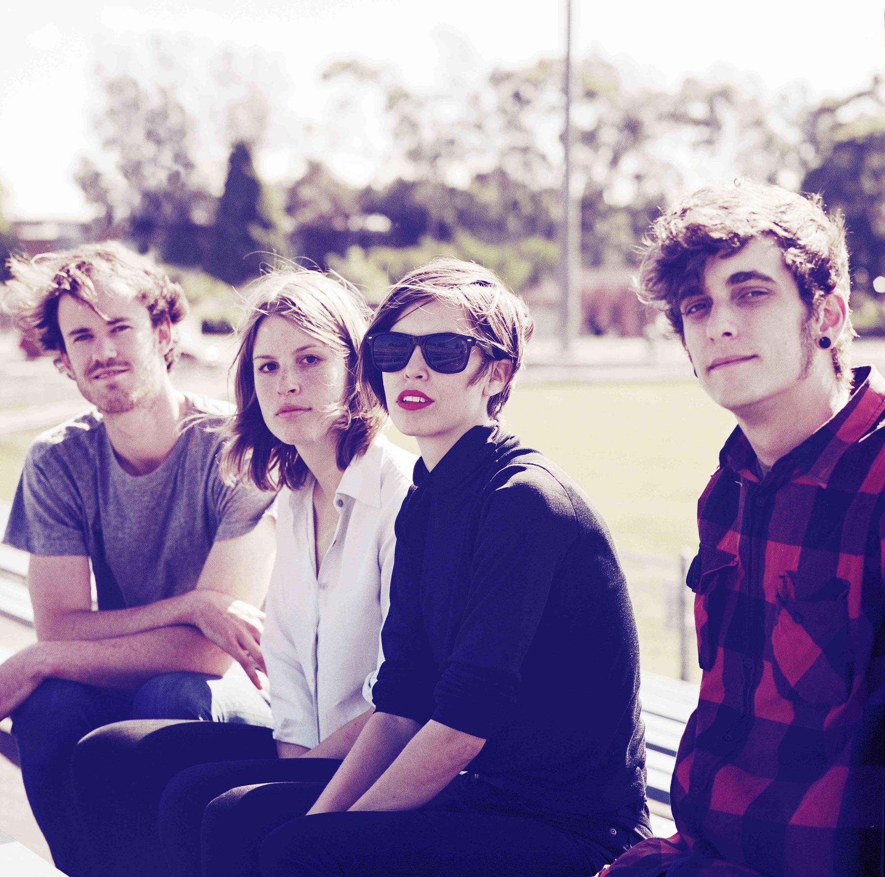
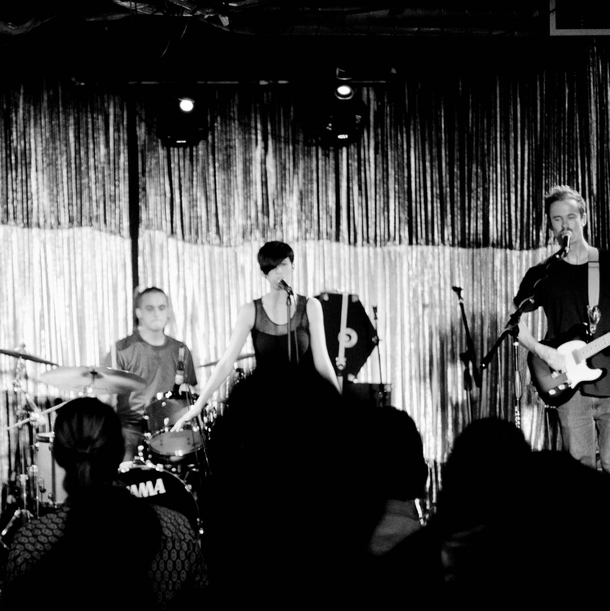
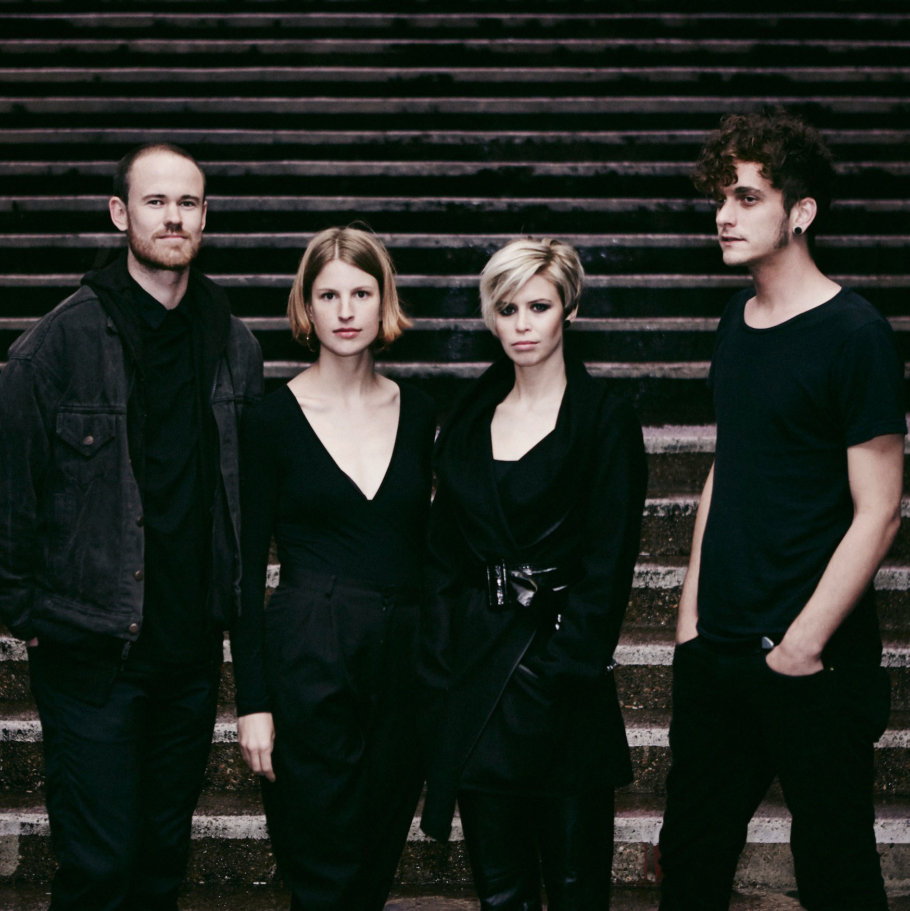
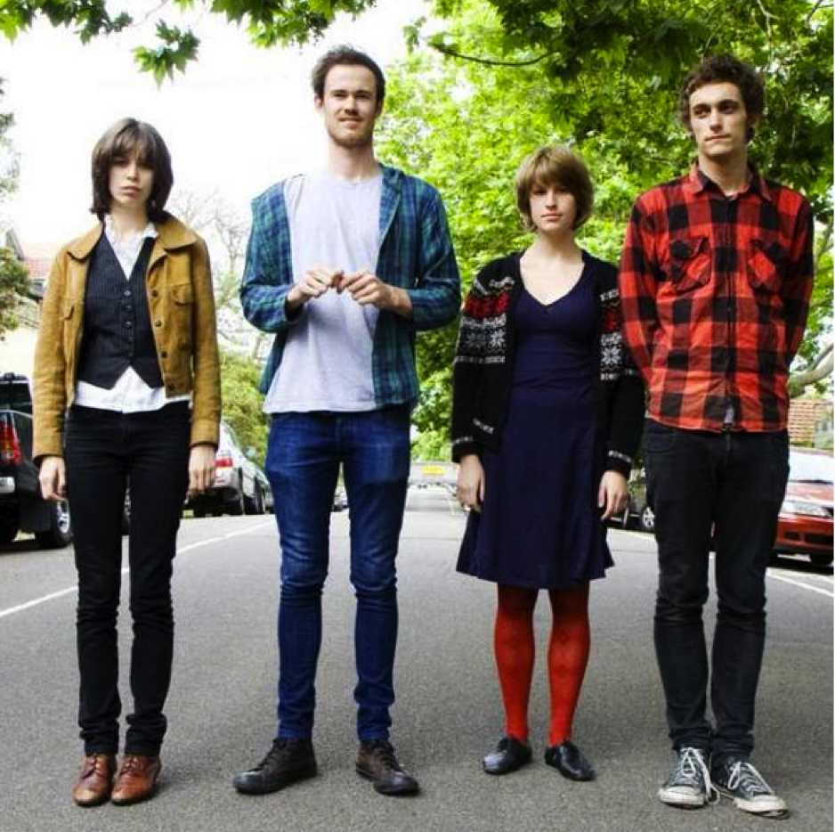
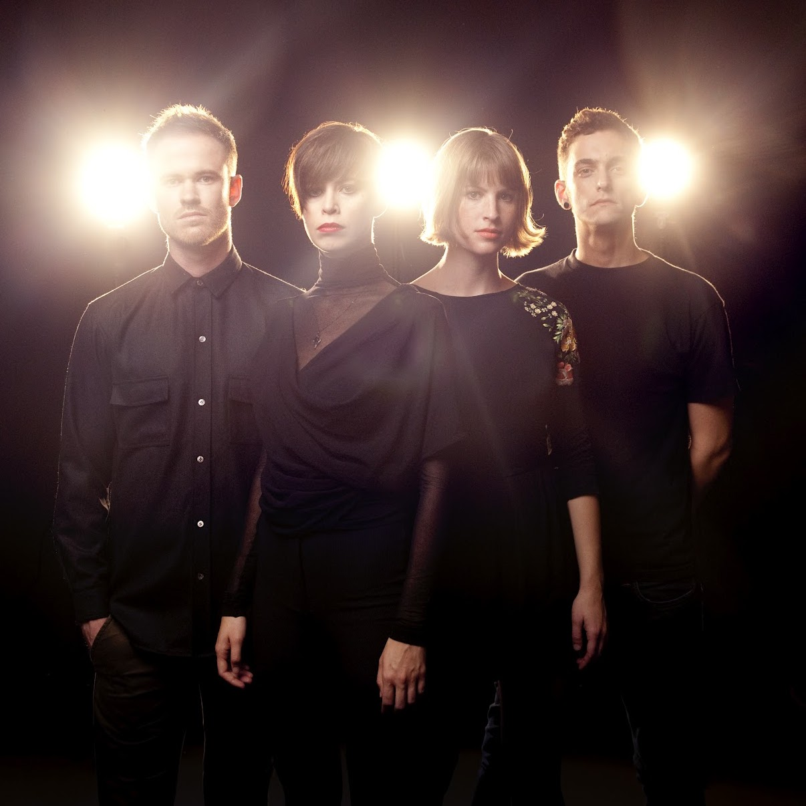

The Jezabels
Home
Music
Gigs
About
January 25, Singapore

January 31, Brisbane
February 2, Sydney
February 8, Perth
February 25, Manchester

January 27, Auckland

February 1, Melbourne

February 7, Adelaide
February 24, Nottingham

February 26, Glasgow